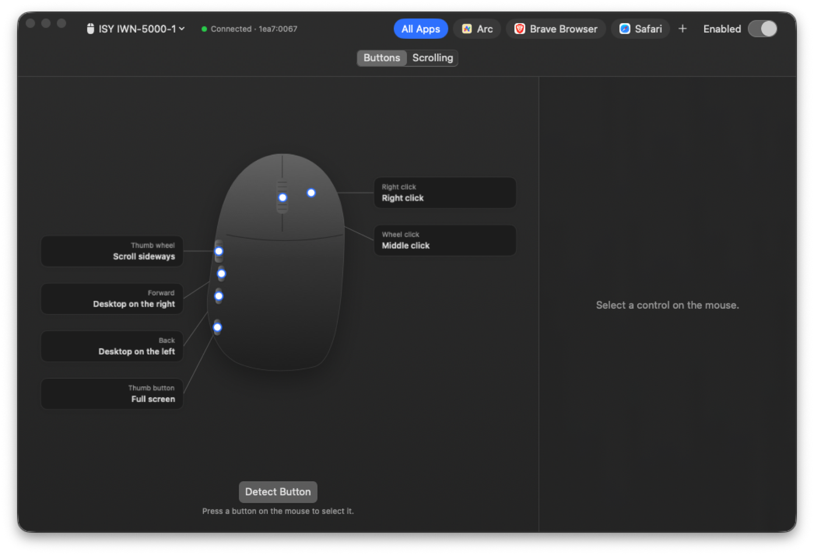

Whisker is a free, open source macOS app that remaps the buttons, wheels and gestures of any mouse. Made for the mice that ship without software.

Pick a button on the drawing, choose what it does, done. Settings apply right away and stay with that mouse.
Keyboard shortcuts, Mission Control, switching desktops, back and forward, tabs, full screen, media keys, another mouse button, or nothing.
One action on a quick press and another on a hold. Go back on a tap, switch to the previous tab on a hold.
Hold a button and move the mouse up, down, left or right. Each direction runs its own action.
Scroll sideways, or turn each notch into an action like volume or switching tabs.
Give a button a different job in your browser than everywhere else. Add an app with one click.
Reverse the wheel or change its speed without touching your trackpad's Natural Scrolling.
Any mouse works out of the box: click Detect Button, press a button, and it shows up. A small profile file adds names, a spot on the drawing, and support for side buttons that secretly type keyboard shortcuts.
Add a profile for your mouse{
"name": "ISY IWN-5000-1",
"devices": ["1ea7:0067"],
"buttons": [
{ "number": 3, "label": "Back",
"position": { "x": 0.1, "y": 0.66 },
"sends": { "keyCode": 123,
"modifiers": ["control"] } }
]
}Download the app, unzip it and drag it to Applications. The first time you open it, macOS asks you to confirm in System Settings because Whisker is not notarized by Apple.
xcode-select --install.git clone https://github.com/brgv-code/whisker.git
cd whisker
./scripts/bundle.sh
open build/Whisker.appWhisker has no network code. It never writes to the mouse's memory and never records what you type: it only notes which device sent a keystroke so it can catch the ones your mouse types for its side buttons.